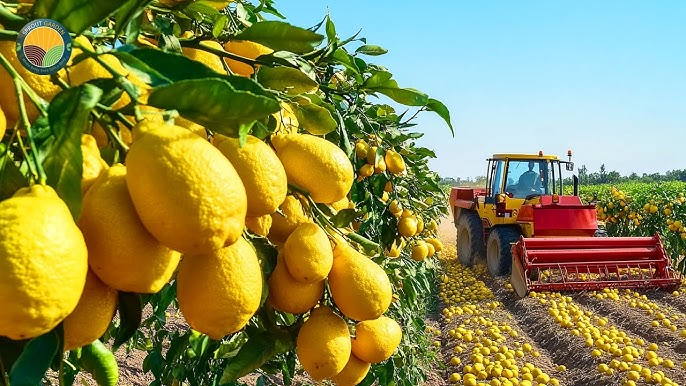

A productive lemon tree commonly takes a few years to mature. EverLemon is designed around that slow arc, not around instant fulfilment.
Impact & Trust
A long promise only works if the stewardship behind it feels concrete.
This page is for the practical questions: how the orchard relationship works, what the impact promise means, how the giving pledge is framed, and why families should trust the commitment over time.


Stewardship
The orchard is not just sourcing. It is part of the memorial experience.
Families are not buying a generic future gift. They are entering a relationship with a real growing environment, stewarded by people and seasons. That reality is what makes the eventual harvest meaningful.
51% giving pledge
The site now has room to explain the pledge properly: a governance-backed commitment aimed at directing 51% of distributable net profit, after tax and prudent reserves, into aligned giving and stewardship outcomes.
What trust looks like here
Clarity, cadence, and honesty about agricultural reality.
If a tree fails, that should be explained plainly. If harvest timing shifts, that should be communicated with care. A fuller site gives those commitments a visible home instead of burying them in a short FAQ.
Why multi-page helps
The practical questions deserve a dedicated place.
When people are considering something this emotional and unusual, confidence often comes from structure: a page for the story, a page for the process, and a page for the proof.

Common questions
Answers framed with more care than a small landing page can usually allow.
Agricultural risk is real. The right answer is not to hide that, but to commit to replanting, clear communication, and stewardship that honours the family's trust.
Yes. The entire point of the future harvest is that it is tied back to the memorial story and presented as a commemorative family moment rather than a generic product drop.
Next page